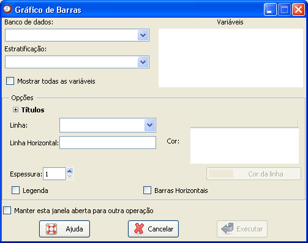

Gráfico
de barras
Gráfico
de barras
O gráfico de barras geralmente é utilizado para representação gráfica da distribuição de frequências de variáveis categóricas nominais e ordinais. Pode mostrar alterações de dados em um período de tempo ou ilustrar comparações entre itens. Cada barra representa a frequência absoluta de ocorrências para a categoria referida.
O caminho para essa janela é: Gráficos
Figura 1. Janela "Gráfico de barras".
Figura 1. Janela "Gráfico de barras".
O primeiro passo é selecionar o banco de dados onde está a variável que se deseja descrever. Para isso, é necessário que o banco já tenha sido aberto (detalhes sobre como abrir dados ou importar dados via ODBC).
Em seguida, as variáveis numéricas aparecerão disponíveis na coluna "Selecione as variáveis". O usuário deverá selecionar uma ou mais variáveis.
Um item opcional da janela é a variável de estratificação. Quando o banco de dados é selecionado, as variáveis que podem ser utilizadas como fatores de estratificação aparecerão no campo "Variável de estratificação". É permitida a escolha de apenas uma variável de estratificação.
Depois de selecionar todas as opções desejadas, basta clicar em "Executar". Para construir sucessivos gráficos usando essa janela, marque a opção "Manter essa janela aberta para outra operação". Com isso, o resultado desejado aparecerá na janela de gráficos do Epi-R, mas a janela atual não será fechada, evitando o retrabalho de acessá-la.